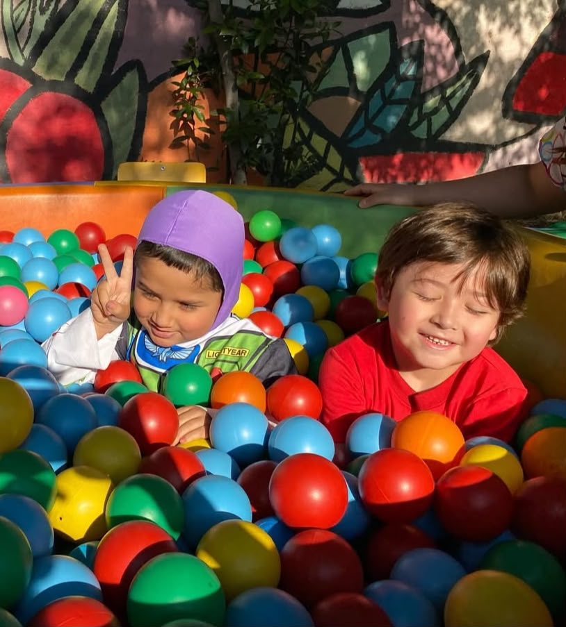
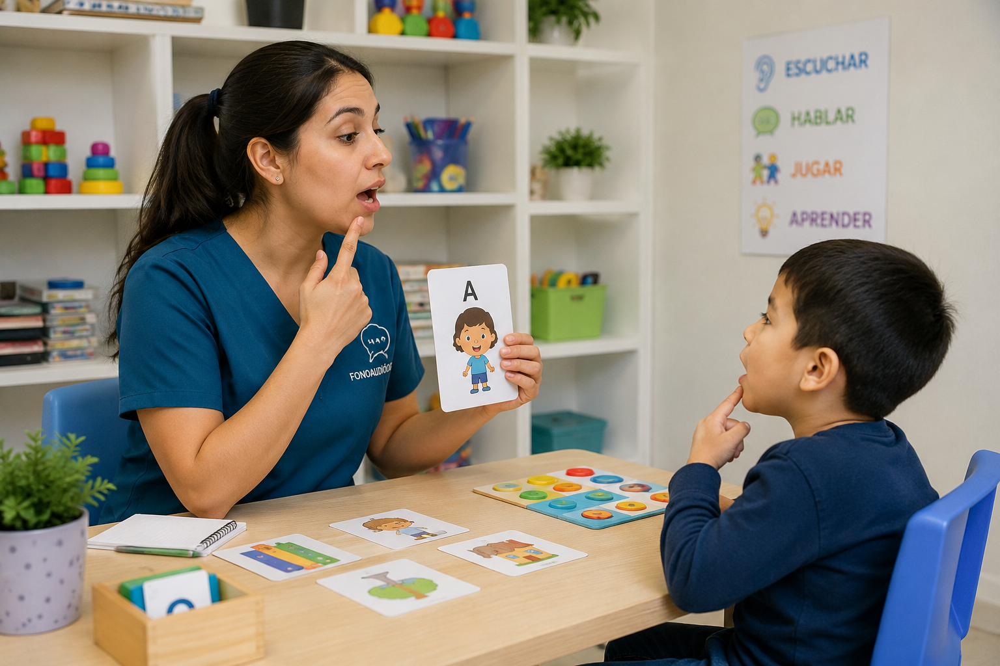

☰

La evaluación ADOS (Autism Diagnostic Observation Schedule) es una herramienta estandarizada utilizada para diagnosticar el autismo en niños y adultos. Esta evaluación permite identificar las características específicas del autismo y evaluar el desarrollo comunicativo y social del individuo.
Reservar hora
En la evaluación ADOS, se evalúan diversas áreas del desarrollo comunicativo y social de las personas con autismo. Algunas de las áreas que se consideran al evaluar son:
Contamos con un equipo de terapeutas especializados en cada área, comprometidos con el bienestar y desarrollo de cada niño.

Diego Bustamante - Fonoaudiólogo
"La terapia de fonoaudiología ha sido fundamental para el desarrollo de mi hijo. Hemos visto mejoras significativas en su comunicación y habilidades sociales. El equipo de profesionales es muy dedicado y comprensivo."
"Gracias a la terapia de fonoaudiología, mi hija ha ganado confianza en su capacidad para expresarse. Los ejercicios y estrategias que nos enseñaron han sido muy útiles en nuestra vida diaria."